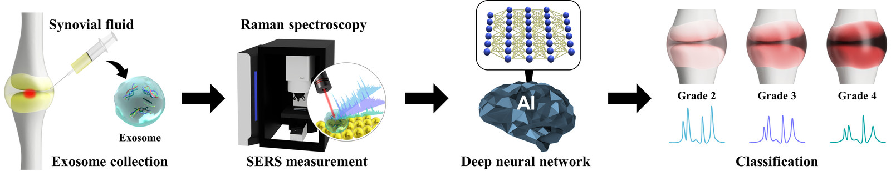
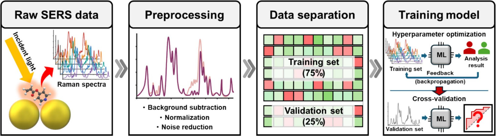
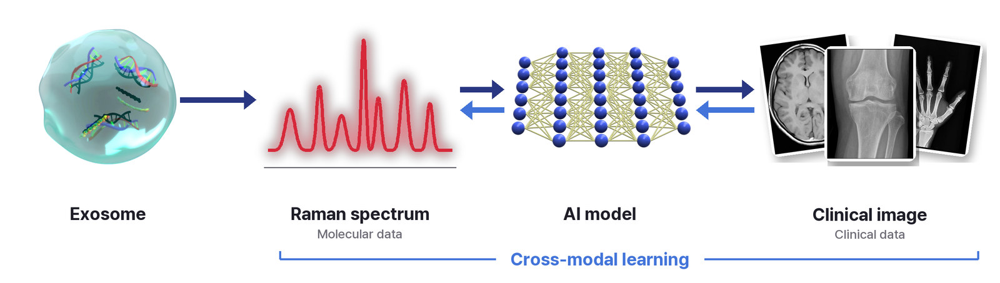

Research
NEST Lab은 플라즈모닉 나노소재 기반 초고감도 바이오센서를 개발하고(WET), 여기서 얻은 분자 데이터를 임상 데이터와 AI로 통합 분석하여(DRY) 질병의 진단·예측과 새로운 바이오마커 발굴을 목표로 합니다.
- 소재 설계부터 센싱, 데이터 분석, 임상 해석까지 하나의 연구실 안에서 순환하는 Wet-Dry 융합 연구NEST Lab develops ultrasensitive biosensors based on plasmonic nanomaterials (WET) and integrates the resulting molecular data with clinical data through AI (DRY), aiming at disease diagnosis and prediction and the discovery of new biomarkers.
- Wet-Dry convergence research that cycles from materials design and sensing to data analysis and clinical interpretation within one lab
WET LAB
Nanobiomaterials & Biosensing — 나노바이오소재 설계와 이를 활용한 초고감도 바이오센서 개발
- 극미량 질병 바이오마커의 고감도 검출 가능Nanobiomaterials & Biosensing — Design of nanobiomaterials and ultrasensitive biosensors built on them
- Highly sensitive detection of trace disease biomarkers
Nanoparticle Synthesis
금·은 등 귀금속 나노입자의 크기, 모양, 조성, 입자 간 간격 설계 및 합성
- 라만 신호를 크게 증폭하는 플라즈모닉 나노구조 구현Design and synthesis of noble-metal nanoparticles such as gold and silver, with control of size, shape, composition and interparticle gaps
- Plasmonic nanostructures that strongly amplify Raman signals
SERS Substrate Fabrication
미세·나노 가공 기술을 이용한 SERS 기판 설계 및 제작
- 강하고 균일하며 재현성 높은 신호, 시료와 측정 환경에 맞춘 최적화 가능Design and fabrication of SERS substrates by micro- and nanofabrication
- Strong, uniform and reproducible signals, optimized for each sample and measurement setting
SERS Biosensing
엑소좀, 활액, 혈액 등 다양한 임상 시료 속 바이오마커의 SERS 측정 및 신호 정량
- 높은 민감도와 재현성의 정량 분석 가능SERS measurement and signal quantification of biomarkers in diverse clinical samples such as exosomes, synovial fluid and blood
- Quantitative analysis with high sensitivity and reproducibility
Multi-platform Biosensors
개발한 나노소재·핵산 나노구조를 전기화학 등 다양한 센서 플랫폼으로 확장 응용
- 엑소좀 miRNA 다중 검출 등 목적에 맞는 센서 설계, 현장 진단(POC)으로의 확장 가능Extending our nanomaterials and nucleic-acid nanostructures to diverse sensor platforms, including electrochemical sensors
- Purpose-built sensors such as multiplexed exosomal miRNA detection, extendable to point-of-care (POC) diagnostics
DRY LAB
AI for Biomaterials & Medicine — 소재 데이터, 분자 데이터, 임상 데이터의 AI 분석
- 소재 개발 가속화와 질병 진단·예측에 활용AI for Biomaterials & Medicine — AI analysis of materials, molecular and clinical data
- Applied to accelerating materials development and to disease diagnosis and prediction
AI-driven Materials Design
합성·공정 조건과 나노구조, 신호 세기 사이의 관계를 머신러닝으로 학습하고 시뮬레이션 데이터와 결합
- 실험 횟수를 줄이면서 최적의 나노소재·SERS 기판 구조 예측 가능Machine learning of the relationships among synthesis and process conditions, nanostructure and signal intensity, combined with simulation data
- Predicting optimal nanomaterial and SERS substrate structures with fewer experiments
AI Clinical Analysis
분자 데이터와 임상 데이터의 전처리 및 머신러닝·딥러닝 모델 개발
- 질병 진단과 진행 예측, 판단 근거가 되는 특징 해석 가능Preprocessing of molecular and clinical data and development of machine learning and deep learning models
- Disease diagnosis, progression prediction and interpretation of the features behind each prediction


Raman Cross-modal Learning
라만 분자 데이터와 X-ray 등 임상 데이터처럼 서로 다른 모달리티의 통합 학습
- 두 데이터 사이의 관계 규명 및 새로운 진단 지표 개발 가능Joint learning of different modalities, such as Raman molecular data and clinical data including X-ray images
- Uncovering how they relate and building new diagnostic indicators

Virtual Omics Future Direction
라만 스펙트럼으로부터 단백체·전사체 등 오믹스 프로파일을 추론하고, 실제 멀티오믹스 데이터와 통합 분석
- 고비용 오믹스 분석 없이 빠르고 저렴하게 분자 수준의 생물학적 정보 예측 가능Inferring omics profiles such as the proteome and transcriptome from Raman spectra, and integrating them with real multi-omics data
- Fast, low-cost prediction of molecular-level biological information without expensive omics assays